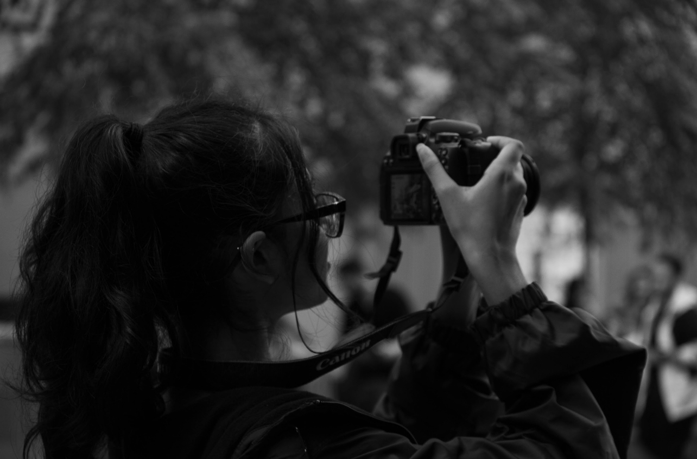

.png)

My name is Shivani Ramdeo and I am a 20 year old freelance photographer based in NY. I am a current student at Baruch College on my way to graduating with a BBA in computer information systems and a minor in art concentrated in photography. With all of the chaoticness in the world, photography keeps me in the present, it blocks out the voices and doesn't let me worry about anything that happened in the past or may happen in the future, just on the moment happening right now.
Embarking on the journey of photography was a decision rooted in my deep appreciation for visual storytelling and the power of capturing moments frozen in time. It all began with a fascination for the intricate dance between light and shadow, and the ability of a single photograph to evoke a myriad of emotions. Photography allows me to explore the world through a unique lens, to capture the beauty of fleeting moments, and to preserve memories that would otherwise fade with time. Each click of the shutter is an opportunity to create art, to document the world as I see it, and to share my perspective with others. Through photography, I find a profound sense of fulfillment and joy, continuously driven by the desire to learn, grow, and immerse myself in the endless possibilities of this captivating art form.